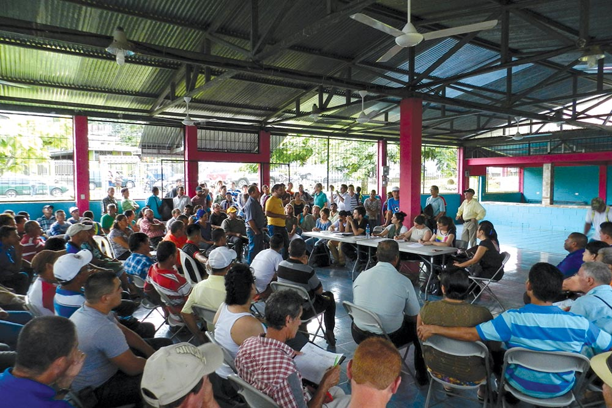

The assessment phase helps CAO gain a better understanding of the issues raised in a complaint and enables the parties to determine which process—dispute resolution or compliance—is initiated to address the complaint.
An assessment typically involves in- country meetings with the complainants and the company receiving IFC or MIGA support. CAO may speak to other stakeholders too, such as broader community groups, civil society organizations, and government.
Through this process, the parties determine whether to address the issues through a dispute resolution or compliance process. Since participation in dispute resolution is voluntary, if one or more parties do not agree to dialogue, the case is referred to compliance.
Cases in assessment, FY2017
CAO handled 20 assessments in 15 countries this year. Of these, 13 were completed, with 6 cases referred to dispute resolution and 7 cases referred to compliance. Seven assessments were ongoing at the end of the year. CAO assessed complaints for the first time from Costa Rica, Guinea, and Uzbekistan:
Costa Rica | CAO assessed two complaints regarding IFC’s Reventazón Hydropower Project, the largest dam in the region. The complaints were led by local residents regarding impacts of the project on biodiversity and land, among other issues. CAO coordinated with the Inter-American Development Bank (IDB) and European Investment Bank (EIB) accountability mechanisms, which also received complaints concerning the project. Both complaints were referred to compliance.

CAO and two other independent accountability mechanisms meet with community members during the assessment of the first Reventazón Hydropower Project complaint, November 2016 (CAO).
Uzbekistan | CAO is assessing a complaint led on behalf of alleged victims of forced labor in the cotton sector in Uzbekistan. IFC is linked to the sector through an investment in a cotton yarn manufacturer and one of Uzbekistan’s private banks.
Guinea | CAO is assessing a complaint from local communities about the Siguiri gold mine in Guinea. The complainants include artisanal miners, traders, and small-holder farmers who allege forced evictions connected to expansion of the mine. IFC is exposed to the project through a financial intermediary investment that was identified in the complaint.